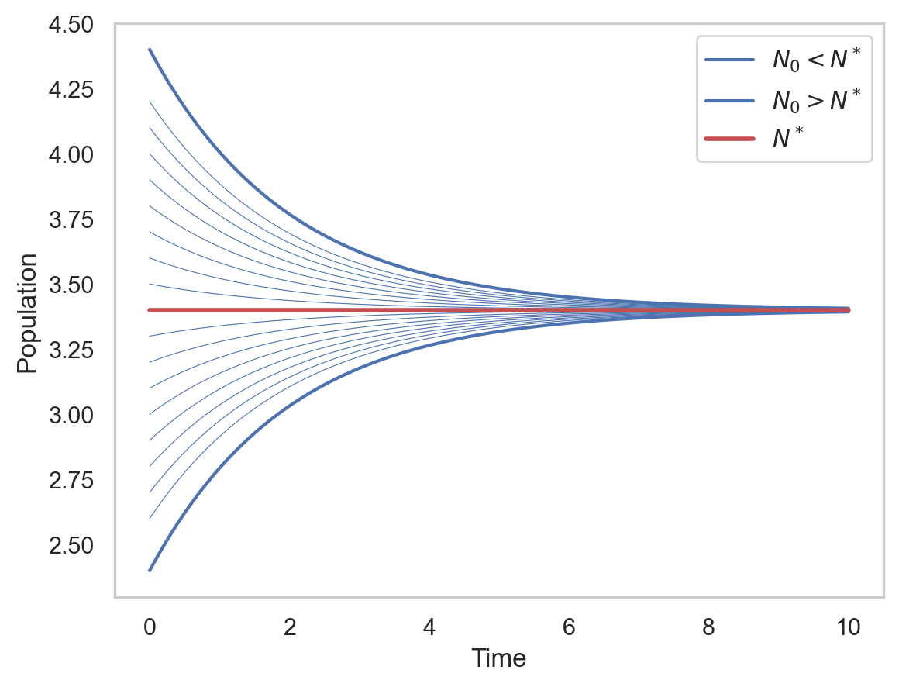

We have seen, using the bathtub analogy, that the fundamental balance equation of population dynamics take the form \[
N'(t) = B(t) - D(t) + I(t) - E(t),
\]
where at time \(t\) we have that
\(N(t)\) is the population,
\(B(t)\) is the birth rate,
\(D(t)\) is the death rate,
\(I(t)\) is the immigration rate, and
\(E(t)\) is the emigration rate.
There is also an integral interpretation, in fact: \[
N(t) - N(t_0) =
\underbrace{\int_{t_0}^t B(s)\,\mathrm{d}s}_\text{births} - \underbrace{\int_{t_0}^t D(s)\,\mathrm{d}s}_\text{deaths} + \underbrace{\int_{t_0}^t I(s)\,\mathrm{d}s}_\text{immigration} - \underbrace{\int_{t_0}^t E(s)\,\mathrm{d}s}_\text{emigration}.
\]
A population growth model is an ODE of the above form with some specific form for each term above. Note that we could provide functions above explicitly, as function of time alone. However, it should be clear that some of them like \(B(t)\) or \(D(t)\) should depend on \(N\).
2.1.1 Malthus model
Quoting Thomas R. Malthus (1766-1834):
Population, when unchecked, increases in a geometrical ratio. Subsistence increases only in an arithmetical ratio. A slight acquaintance with numbers will show the immensity of the first power in comparison of the second.
Malthus’ model is mathematical formulation of the above statement. We already derived Malthus model, but let us recall the hypotheses.
The population is homogeneous, that is all individuals are identical. We have a single class to represent them, that is \(N(t)\).
The population is isolated, so \(E(t)=I(t)=0\).
The habitat is invariant, so resources and life conditions are not affected by the environment nor the population itself.
The population is very large, so we can consider continuous functions.
On a short time scale \(\Delta t\), each individual gives birth to \(\beta \Delta t\) new individuals, \(B(t) = \beta N(t)\).
On a short time scale \(\Delta t\), each individual has probability \(\mu \Delta t\) of dying, \(D(t) = \mu N(t)\).
The non-negative parameters \(\beta\) and \(\mu\) are the fertility and mortality rate, respectively. From hypothesis 4, we have that \(\mu\) and \(\beta\) are constant. We introduce the growth rate\[
r = \beta - \mu,
\]
also called Malthus parameter or biological potential.
The Malthus’ model reads: \[
N' = rN, \quad\Rightarrow\quad N(t) = e^{rt}N(0),
\]
thus, when \(r>0\), the growth of population is geometrical and unbounded, as predicted by Malthus.
2.1.2 Expected life
We have seen that, in absence of births, the population goes like \[
N(t) = e^{-\mu t} N_0,
\]
thus, we could say that the probability of surviving up to time \(t\) is \(e^{-\mu t}\). Specifically, the life expectancy\(L\) is a random variable such that \[
\mathbb{P}[L > t] = e^{-\mu t}.
\]
Thus, the cumulative distribution of \(L\) is \[
F_L(t) = \mathbb{P}[L < t] = 1 - \mathbb{P}[L > t] = 1-e^{-\mu t},
\]
and the probability density function is \[
f_L(t) = F_L'(t) = \mu e^{-\mu t}.
\]
We conclude that \(L\sim \mathrm{Exp}[\mu]\), the exponential distribution. The average life expectancy is: \[
\mathbb{E}[L] = \int_0^\infty s f_L(s)\:\mathrm{d}s = \int_0^\infty s \mu e^{-\mu s}\:\mathrm{d}s = \frac{1}{\mu}.
\]
We have another interpretation of \(\mu\): it is the reciprocal of the expected life time.
2.1.3 Basic reproduction number
Let us rescale the equation and put it in non-dimensionalized form. This is a fundamental step in general, because
it reduces the number of parameters,
it removed scale effects (units are removed),
it highlights the determining factors of the model (maybe what matters is not this or that parameter, by their ratio or sum).
Here, we rescale as follows: \[
\tau = \mu t, \quad u = N,
\]
so that time is now in units of “expected life time”: \(\tau=1\) means \(t=\mu^{-1} = \mathbb{E}[L]\). We have that \[
N' = \frac{\mathrm{d}N}{\mathrm{d}t} = \frac{\mathrm{d}u}{\mu^{-1}\mathrm{d}\tau} = \mu\frac{\mathrm{d}u}{\mathrm{d}\tau} = \mu\dot{u}.
\]
We use the “dot” notation \(\dot{u}\) for the derivative for the non-dimensional form, just to remember that now the time is \(\tau\) and not \(t\). We finally obtain: \[
\dot{u} = \mu^{-1}N' = \frac{\beta}{\mu} N - N = (R_0 - 1) u,
\]
where we defined the basic reproduction number\[
R_0 = \frac{\beta}{\mu} = \beta\mathbb{E}[L].
\]
We could interpret it as the average number of newborns produced by one individual during his whole life. Note that \(R_0\) is non-dimensional.
Exercise
Why it does not make much sense to use the scaling \(\tau = r t\)?
2.1.4 Migration
In the presence of migration, say with a constant rate, we have the ODE: \[
N' = rN + m = f(N),
\tag{2.1}\]
where \(m = I - E\). If positive, there is a net immigration, otherwise emigration.
In order to study how the model will behave, we have 3 options:
Solve the problem analytically, that is finding \(N(t) = \ldots\) explicitly.
Solve the problem numerically, which is always possible.
Study the problem qualitatively.
The last option has the advantage that we can be generic, there is no need for a specific value of the parameters or the initial condition. The qualitative study consists in the following steps:
1) Fixed points of the system. A fixed point or equilibrium (see Definition A.12) is a constant solution of the ODE. We can find it by setting the right hand side to zero: \[
N'=0 \quad\Leftrightarrow\quad r N + m = 0.
\]
The model has a single equilibrium for \[N = N^* = -\frac{m}{r} = \frac{m\mathbb{E}[L]}{1-R_0}\]
2) Biological feasibility. Equilibria must be biologically feasible. For this model, we need to check that \(N^*\) is non-negative, otherwise it doesn’t make sense biologically speaking. Therefore \[
N^* \ge 0, \quad\Leftrightarrow\quad \text{$m$ and $r$ have opposite sign and $r\neq 0$.}
\]
3) Local stability. Informally, an equilibrium is locally stable when, starting from a neighborhood of it, the solution stays close to it for \(t\to\infty\). It is asymptotically stable when the solution converges toward the equilibrium for \(t\to\infty\). It is unstable otherwise. See Definition A.13 for a more precise statement.
The local stability is determined by the sign of the derivative of the right hand side, that is \(f'(N^*)\) for \(f(N)=rN+m\). In general (see Section A.5.5),
when \(f'(N^*)<0\), the equilibrium is asymptotically stable, and
when \(f'(N^*)>0\), the equilibrium is unstable.
To see this in this specific case, let us define \(w(t)=N(t)-N^*\). Then, \[
w' = N' = rN + m = r(N - N^*) = rw.
\]
Note that \(f'(N) = r\). We have that: \[
w(t) = w_0 e^{rt},
\]
hence,
if \(r < 0\), then \(w \to 0\) for all \(w_0\), so \(N(t)\to N^*\). The equilibrium is locally asymptotically stable.
if \(r > 0\), then \(w \to \infty\) and the equilibrium is unstable.
4) Global stability. What if we start very far away from the equilibrium? In this particular case, with a linear ODE, the local stability argument applies also globally, thus the equilibrium is globally attractive. But for general, nonlinear ODEs this may not be the case, so we perform the analysis anyway. Note that if \(N(0)=N_0 > N^*\), then \[
N'(0) = rN(0) + m = r (N_0 - N^*) < 0,
\]
so the derivative of the solution is negative (assuming \(r<0\)). Furthermore, for \(N(t) > N^*\), the derivative is always negative. So, the solution must be monotonically decreasing. But the solution is bounded from below by the equilibrium \(N(t)=N^*\), so we conclude that: \[
N(t) \to N^*
\]
for all \(N_0 \ge N^*\). Symmetrically, when \(N_0 < N^*\), the derivative is positive and stays positive for all \(t\), so the solution is monotonically increasing. Hence: \[
N(t) \to N^*
\]
for all \(N^0\). The equilibrium is therefore globally stable when \(r<0\).
5) Phase portrait. The phase portrait of a dynamical system is the collection of all possible orbits. Here, the phase space is \(\Omega=[0,\infty)\). The only equilibrium we have, \(N^*\), is a barrier to other orbits, because orbits cannot intersect (See Proposition A.2). Therefore:
For this problem we actually have the general solution \[
N(t) = (N_0 - N^*)e^{rt} + N^*.
\]
Code
import numpy as npimport matplotlib.pyplot as pltimport seaborn as snsr,m =-0.5,1.7Neq =-m/rsns.set_theme("notebook", style="whitegrid")t = np.linspace(0,10,100)N =lambda N0: (N0-Neq)*np.exp(r*t) + Neqfig, ax = plt.subplots()ax.plot(t,N(Neq -1),'b',label='$N_0 < N^*$')ax.plot(t,N(Neq +1),'b',label='$N_0 > N^*$')for delta in np.arange(0.1,0.9,0.1): ax.plot(t,N(Neq + delta),'b',lw=0.4) ax.plot(t,N(Neq - delta),'b',lw=0.4)ax.plot(t,N(Neq),'r-',lw=2,label='$N^*$')ax.grid()ax.legend()ax.set_xlabel('Time')ax.set_ylabel('Population')plt.show()

Example of trajectories
The case \(m<0\) and \(r>0\) is also interesting. Here, the equilibrium \(N^*\) is positive, but unstable. For \(N_0 > N^*\) the population still grows exponentially, so emigration as no effect on the overall population. But for \(N_0 < N^*\) the solution will become negative in finite time: the model is not correct. The reason is simple: the emigration \(m\) cannot be constant (like the immigration), it must depend on \(N\) as well.
By exogenous variability we mean variability in the parameter \(r\) that does not depend on the population. (Endogenous variability is when the parameters depend on internal variables like \(N\).) Thus, we consider the problem: \[
N' = r(t)N,
\]
for \(r(t)\) continuous function. An example could births and deaths that depend on climate or temperature. The solution is: \[
N(t) = N_0 e^{\int_{t_0}^t r(s)\,\mathrm{d}s}
\]
We can also rewrite the solution as: \[
N(t) = N_0 e^{(t-t_0)\frac{1}{t-t_0}\int_{t_0}^t r(s)\,\mathrm{d}s},
\]
showing that if the limit \[
r^* = \lim_{t\to\infty}\frac{1}{t-t_0}\int_{t_0}^t r(s)\,\mathrm{d}s
\]
exists then the asymptotic behavior of the solution is: \[
N(t) \approx e^{r^*(t-t_0)}, \quad t \gg 1.
\]
An interesting case is when \(r(t)\) is periodic, that is there exists \(T>0\) such that \(r(t+T)=r(t)\). In this case the above formula still applies, but we can “forget” the limit (check Assignments for a proof) and take: \[
\bar{r} = \frac{1}{T} \int_0^T r(s)\,\mathrm{d}s,
\]
and write the solution for any \(t \ge t_0\) as: \[
N(t) = e^{\bar{r}(t-t_0)}N_\pi(t),
\]
for some \(T\)-periodic function \(N_\pi\). Note that \[
N(t_0 + kT) = e^{\bar{r}kT}N_\pi(t_0) = e^{\bar{r}kT}N(t_0),
\]
so after \(k\) periods the solution grows by a factor \(e^{\bar{r}kT}\). The factor \(e^{\bar{r}}\) is called Floquet multiplier.